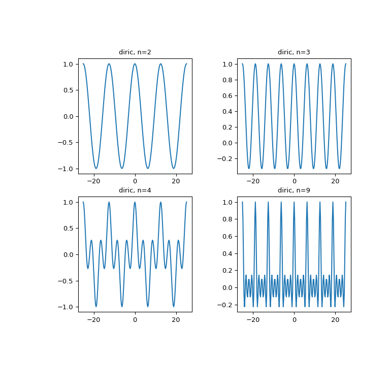

scipy.special.diric¶
-
scipy.special.diric(x, n)[source]¶ Periodic sinc function, also called the Dirichlet function.
The Dirichlet function is defined as:
diric(x, n) = sin(x * n/2) / (n * sin(x / 2)),
where n is a positive integer.
- Parameters
- xarray_like
Input data
- nint
Integer defining the periodicity.
- Returns
- diricndarray
Examples
>>> from scipy import special >>> import matplotlib.pyplot as plt
>>> x = np.linspace(-8*np.pi, 8*np.pi, num=201) >>> plt.figure(figsize=(8, 8)); >>> for idx, n in enumerate([2, 3, 4, 9]): ... plt.subplot(2, 2, idx+1) ... plt.plot(x, special.diric(x, n)) ... plt.title('diric, n={}'.format(n)) >>> plt.show()
The following example demonstrates that
diricgives the magnitudes (modulo the sign and scaling) of the Fourier coefficients of a rectangular pulse.Suppress output of values that are effectively 0:
>>> np.set_printoptions(suppress=True)
Create a signal x of length m with k ones:
>>> m = 8 >>> k = 3 >>> x = np.zeros(m) >>> x[:k] = 1
Use the FFT to compute the Fourier transform of x, and inspect the magnitudes of the coefficients:
>>> np.abs(np.fft.fft(x)) array([ 3. , 2.41421356, 1. , 0.41421356, 1. , 0.41421356, 1. , 2.41421356])
Now find the same values (up to sign) using
diric. We multiply by k to account for the different scaling conventions ofnumpy.fft.fftanddiric:>>> theta = np.linspace(0, 2*np.pi, m, endpoint=False) >>> k * special.diric(theta, k) array([ 3. , 2.41421356, 1. , -0.41421356, -1. , -0.41421356, 1. , 2.41421356])